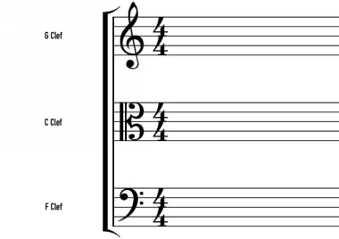

The use of clefs is closely related to this. What a clef does is name a particular note on the staff—a G, an F, or a C—and by virtue of its placement on the staff vertically it places that note (and so all of the other notes as well) at a particular place on the staff lines. There are 3 main types of clefs with their distinct shapes used in modern music notation:
1. G-clef
2. C-clef
3. F-clef

Figure 2.2.1. Three main clef shapes
These are the main shapes of clefs, but they can be applied in different ways – which is done by slightly changing their position on the staff. These 3 clefs therefore have different sub-types, positioned differently on the staff.
The most common clefs you can find are the treble clef and the bass clef. Treble clef is the type of G clefs (like a sub-type), while bass clef is the type of F clefs. These two clefs taken together (on two staves) make up what is known as the grand stave, which is used for piano and harp music (and sometimes for guitar music in the classical tradition).
Beyond the treble and bass clefs, which are the most common forms of the G-clef and F-clef respectively, there are the alto and tenor clefs, which are each forms of the C-clef.
Figure 2.2.2. Notice the different placement of the Alto and Tenor clefs
Though the four most common clefs are treble, bass, alto, and tenor, it is possible to place the G-clef, the F-clef, or the C-clef in other places on the staff to denote different clefs (such as, for instance, the French clef, which was a variation on the treble clef that was designed in the 17th Century for use with violins).
Figure 2.2.3. Notice the difference in placement between French Violin Clef and Treble clef
To summarize so far: Clefs determine the note value of each line of the staff on which they are placed (you’ll understand soon how). There is more than one clef, and more than one way to place each clef. The shape and the placement of a clef, along with the type of clef that it is, orients the staff lines and tells the performer which notes go where. Although the notes of the staff always occur in order (ascending sequentially up the lines and spaces), they begin with different notes and in different octaves at different points on that staff, as determined by the clef.
Unless altered by the key signature the notes that any clef determines on the staff will always be the natural notes (C, D, E, F, G, A, B; the notes without sharps or flats), in the key of C Major/A minor (the only keys without sharps/flats – or accidentals as they are called). In other words, clefs themselves don’t change the key – key signature does that – clefs simply set the range for the staff in terms of frequencies.